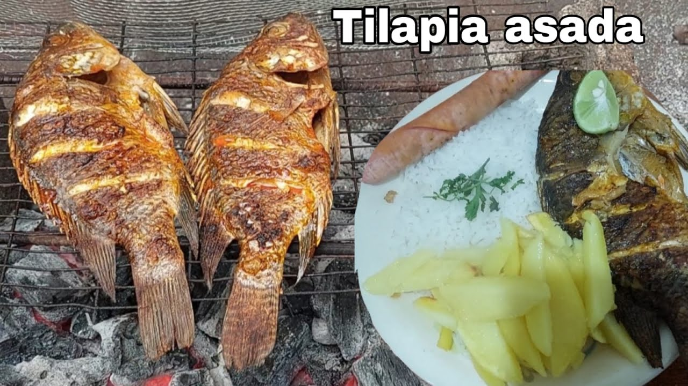
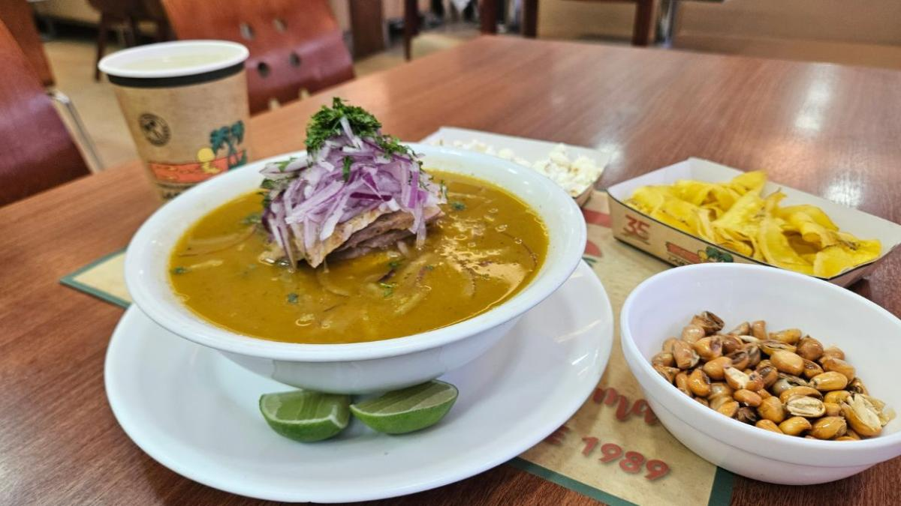
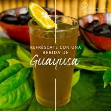

Las 7 Cascadas son un espectacular atractivo turístico natural ubicado en el cantón La Maná, Ecuador. Aquí disfrutarás de la naturaleza, el agua cristalina, la aventura y la biodiversidad en su máxima expresión.
🌿 Información General
Ubicación: La Maná, Cotopaxi
Tipo de turismo: Ecoturismo y aventura
Acceso: Caminatas y senderos naturales
💧 Las Siete Cascadas
Cascada 1: Fácil acceso, excelente para fotos.
Cascada 2: Caída pronunciada, rodeada de vegetación.
Cascada 3: Requiere esfuerzo, ofrece una piscina natural.
Cascada 4: Entre rocas, ideal para un descanso.
Cascada 5: Una de las más altas y fotogénicas.
Cascada 6: Entorno selvático, perfecta para observar fauna.
Cascada 7: La más lejana, ofrece una vista espectacular.
🍽️ Comidas Típicas de La Maná
1. Bolón de Verde
Hecho con plátano verde majado y relleno de queso o chicharrón. Ideal para el desayuno con café.
 2. Tilapia Asada
Pescado fresco de río asado con especias locales, servido con yuca o arroz.
3. Encebollado 
Sopa tradicional con pescado, yuca y cebolla morada. Muy popular para reponer energía tras una caminata.

4. Jugos Tropicales
Guayusa, naranjilla, maracuyá y otras frutas amazónicas refrescantes para el clima húmedo.
✅ Recomendaciones
Usa ropa cómoda y zapatos antideslizantes.
Lleva hidratación, protector solar y repelente.
No dejes basura en el lugar, cuida el entorno natural.
✨ Conclusión
Visitar Las 7 Cascadas es conectar con la naturaleza y la cultura manense. Aventura, paisajes únicos y gastronomía típica te esperan en este mágico rincón de Ecuador.